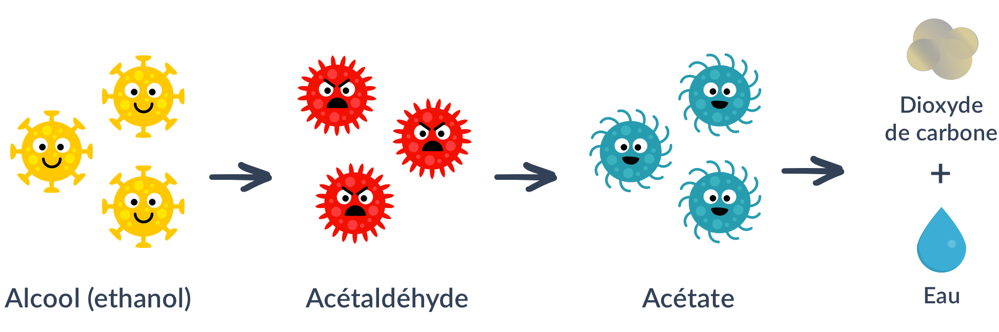
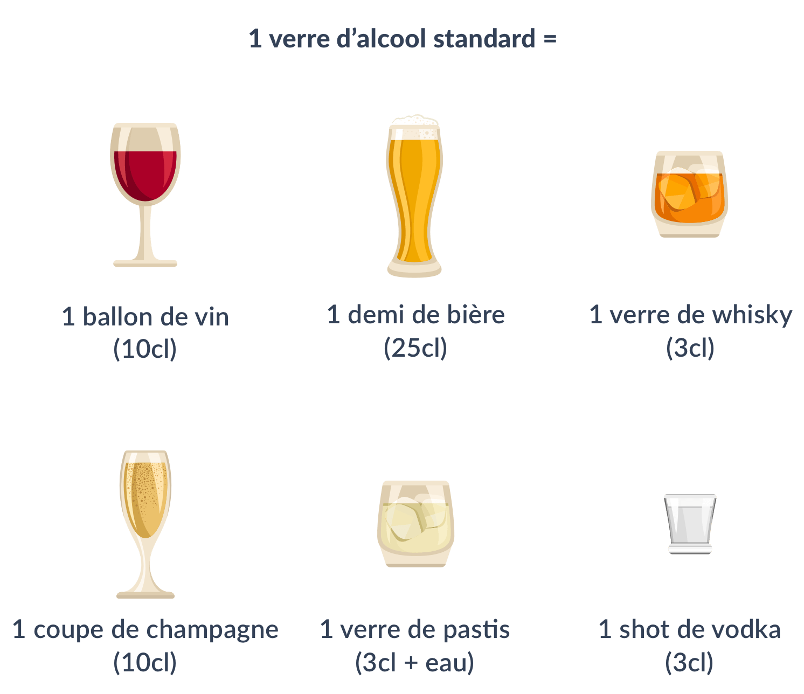
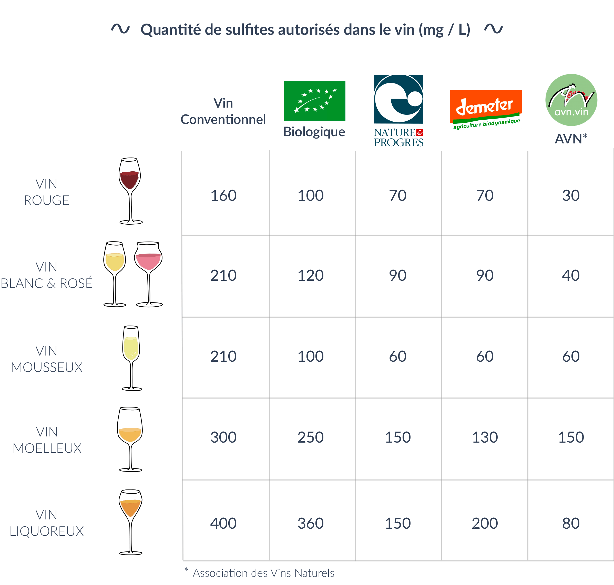

Un verre d’alcool à la main, on trinque en disant « À votre santé ! ». On entend souvent qu’un verre de vin par jour serait bon pour la santé. Pourtant, en parallèle, on est régulièrement informés sur les conséquences dramatiques de la consommation d’alcool. Alors, quels sont les réels effets de l’alcool ? L’alcool est-il bon ou mauvais pour la santé ? Voici notre synthèse, rédigée avec l’aide du nutritionniste Anthony Berthou.
Les effets de l’alcool sur le corps
Lorsqu’il est ingéré, l’alcool arrive dans l’estomac. Une partie de l’alcool passe ensuite immédiatement dans le sang : celui-ci va alors être dirigé via les vaisseaux sanguins vers le foie, le cerveau et le pancréas. Il va ensuite commencer à se décomposer et à se transformer en acétaldéhyde, une molécule cancérigène et toxique pour le foie. L’acétaldéhyde va continuer à se décomposer en acétate et va finalement être éliminé par l’organisme sous forme de dioxyde de carbone et d’eau.

Le foie a besoin d’environ une heure pour éliminer une unité d’alcool (soit 10g). Mais, lorsque la quantité d’alcool est trop importante (ou selon les individus), notre foie a besoin de plus de temps pour éliminer tout l’alcool. Une partie de l’acétaldéhyde reste dans notre sang et dans nos tissus (dont le cerveau) avant de pouvoir être éliminée. Elle va alors contribuer au développement des radicaux libres, des molécules qui sont impliquées dans de nombreuses maladies : cancers, maladies dégénératives comme la maladie d’Alzheimer, maladies cardio-vasculaires…
L’alcool en excès est notamment associé à une hausse du risque de cancer de l’oesophage, du foie, du sein, du larynx, ou encore de cancers colorectaux. La consommation d’alcool augmente aussi le risque de maladies cardio-vasculaires, de cirrhose et de troubles cognitifs à long terme (perte de mémoire, difficultés d’attention, etc.).
Le risque lié à la consommation d’alcool est cependant variable d’un individu à l’autre car il dépend aussi de différents facteurs, notamment :
- La prédisposition génétique
- L’hygiène de vie générale, et en particulier l’alimentation
Un verre d’alcool, c’est quoi ?
Quelle que soit la boisson alcoolisée, un verre standard représente à peu près la même quantité d’alcool soit 10g à 13g.

Le vin rouge est-il meilleur ?
Le vin rouge contient du resvératrol, un puissant antioxydant de la famille des polyphénols présent dans la peau et les pépins de raisin et qu’on retrouve ensuite dans les tanins. Or, les antioxydants vont permettre de protéger nos cellules de l’effet des radicaux libres (voir notre article sur les antioxydants). Les vins rouges jeunes et tanniques, ainsi que le cépage pinot noir, sont les plus intéressants car ce sont ceux qui contiennent le plus de resvératrol.
Cependant, les bénéfices que pourraient potentiellement apporter la consommation modérée de vin rouge dépendent de la prédisposition génétique et de l’hygiène de vie générale. Au vu des effets néfastes que peut par ailleurs engendrer la consommation d’alcool, il largement largement recommandé de combler nos apports en antioxydants via l’alimentation dans laquelle les antioxydants sont nombreux.
Privilégiez les repas pour consommer de l’alcool !
Il est conseillé de consommer l’alcool pendant les repas plutôt qu’en dehors. En effet, l’alcool est ainsi dilué avec l’alimentation que nous ingérons. Cela permet une diffusion plus lente de l’acétaldéhyde, ce qui favorise alors sa tolérance.
Attention aux sulfites
Le vin contient naturellement des sulfites, produits lors du processus de fabrication. Mais, d’autres sulfites sont généralement ajoutés afin de servir de conservateurs. Ces composés à base de soufre peuvent provoquer des réactions d’intolérance voire des réactions allergiques (plaques cutanées, dermatites, urticaires, asthme, conjonctivites, migraines, etc.). Une part importante de la population y serait sensible.
Les teneurs résiduelles de sulfites dans le vin sont très variables en fonction de la nature et de la qualité des vins, les vins liquoreux en étant les plus riches. Malheureusement, aucune réglementation n’impose d’afficher la teneur en sulfites et il n’est donc pas possible de connaître la quantité exacte des vins. Un verre de 20cl de vin rouge conventionnel peut ainsi contenir jusqu’à 32 mg de sulfites, soit 70% de la dose journalière admissible pour une personne de 65 kgs. On peut donc très rapidement se retrouver exposé à des quantités très importantes de sulfites, dépassant largement les doses recommandées.
Les sulfites sont également autorisés dans le vin biologique, mais la réglementation est un peu plus stricte. Par exemple, elle impose un dosage maximal de 110mg/L pour un vin rouge biologique au lieu de 160mg/L pour un vin rouge conventionnel. La réglementation du vin issu de biodynamie va encore plus loin en limitant l’apport à moins de 50% des teneurs conventionnelles (70mg/L pour le vin rouge par exemple). De même, le label Nature & Progrès va plus loin que le label bio conventionnel en limitant davantage la quantité de sulfites autorisés.
C’est quoi la biodynamie ?
La biodynamie pousse la démarche du bio encore plus loin. Cette démarche porte une attention particulière à la qualité du sol, et à l’échange entre la terre et la plante. Ainsi, la biodynamie utilise des préparations à base de plantes et de bouses de vaches qui sont ensuite enfouies dans la terre pour l’enrichir et aider ainsi la vigne à mieux se développer. La biodynamie prend aussi en compte le mouvement des astres pour établir les calendriers de plantation.
Le principal label biodynamique est le label Demeter. Son cahier des charges est plus strict que le label bio européen : les intrants y sont encore plus limités. Il existe également le label Biodyvin, moins courant et un peu moins exigeant que le label Demeter concernant la quantité de sulfites.
Le vin naturel va quant à lui encore plus loin que le vin biodynamique, puisqu’il combine les deux méthodes de l’agriculture biologique et de la biodynamie.
Enfin, de plus en plus de vignerons proposent des vins dits naturels, ne rajoutant pas ou très peu de sulfites (maximum 30 mg/L pour le vin rouge par exemple). Malheureusement, cela nuit parfois au goût du vin et à sa stabilité. Pour les identifier, il est généralement indiqué “vin nature” ou “sans soufre ajouté”.

En pratique
- Évitez au maximum la consommation d’alcool
- Si vous choisissez de consommer de l’alcool, optez plutôt pour du vin rouge et limitez votre consommation de vin à 5 verres par semaine (et à un verre maximum par jour, voire 2 en cas de gabarit important)
- Optez pour du vin bio issu de la biodynamie : moins contaminé en pesticides, il est aussi moins riche en sulfites.
- Choisissez du vin rouge jeune et tannique ou du pinot noir
- LoConte NK, Brewster AM, Kaur JS, Merrill JK, Alberg AJ. Alcohol and Cancer: A Statement of the American Society of Clinical Oncology. J Clin Oncol. 2018 Jan 1;36(1):83-93.
- Alcohol Consumption and the Risks of Adenocarcinoma and Squamous Cell Carcinoma of the Esophagus. Pandeya N, Williams G, Green AC, Webb PM, Whiteman DC; Australian Cancer Study. Gastroenterology. 2008 Dec 27.
- Ballard C, Lang I. Alcohol and dementia: a complex relationship with potential for dementia prevention. Lancet Public Health. 2018 Mar;3(3):e103-e104.
- Liu Y, Nguyen N, Colditz GA. Links between alcohol consumption and breast cancer: a look at the evidence. Womens Health (Lond). 2015 Jan;11(1):65-77.
- INSERM Expertise collective. Ed 2001. Synthèse : 277-325. Effets de l’alcool sur le système cardio-vasculaire : 175-203. Effets de l’alcool sur les performances cognitives du sujet âgé ; 165-73
- Chu, Q., O'Dwye, M., & Zeece, M. G. (1998). Direct analysis of resveratrol in wine by micellar electrokinetic capillary electrophoresis. Journal of agricultural and food chemistry, 46(2), 509-513.
- Scientific Opinion on the re-evaluation of sulfur dioxide (E 220), sodium sulfite (E 221), sodium bisulfite (E 222), sodium metabisulfite (E 223), potassium metabisulfite (E 224), calcium sulfite (E 226), calcium bisulfite (E 227) and potassium bisulfite (E 228) as food additives. EFSA Journal 2016; 14(4): 4438.
- Vally, Hassan and Neil LA Misso. “Adverse reactions to the sulphite additives” Gastroenterology and hepatology from bed to bench vol. 5,1 (2012): 16-23.
- Lester MR. Sulfite sensitivity: significance in human health. J Am Coll Nutr. 1995 Jun;14(3):229-32. Review. PubMed PMID: 8586770.

Super intéressant les articles bien écrits dans des Termes simples bravo
Bravo pour cet article, très clair…
Un éclairage réel et rapide merci
bravo pour vos articles toujours très intéressants…
J’adore vous lire
Excellent article …
Ah la la: avec cet article vous mettez un coup de canif dans la tradition et la croyance. Il y en a même qui disent que l’eau est pire. Evidemment, on entend régulièrement des drames familiaux liés à la consommation d’eau de source. Je n’imagine même pas les accidents de la route à cause de l’eau qui pétille.
Un peu de sérieux svp Mesdames et Messieurs. Vous aimez boire, et bien buvez en pleine conscience, en lisant mot à mot ce qui est écrit ci-dessus. Mais restez chez vous afin d’épargner ceux qui souhaitent profiter au mieux de la vie. Les dernières recherches scientifiques montrent que nos comportements (tabac, stress, alcool…) modifient le génome et donc impacteraient la santé des descendants.
Je ne suis pas sûre que nos enfants seraient d’accord pour obtenir un tel héritage.
En tout cas, me concernant, la cuite que j’ai subie pendant 7 semaines, liée à la chimiothérapie dense, pour me sauver éventuellement la vie, m’a largement convaincue !
Sur ce, remerciez vos organes de « fonctionner » pour toute la maltraitance que vous leur affligez.
Très intéressant, merci.
Très bon article de vulgarisation qui de ce fait engendre une généralisation à laquelle il m’est impossible de ne pas répondre. Soyons bien clair l’abus d’alcool est dangereux pour la santé et les sulfites peuvent effectivement être source d’allergie. Mais savez vous que la nature ne fait pas toujours bien les choses? Essayez de laisser quelques raisins dans un coin sans y apporter la moindre attention, vous obtiendrez bien plus certainement du vinaigre. Ceci dit chacun ses goûts. J’aimerais contribuer au débat en apportant quelques lumières sur le « qui fait quoi? ». Le vinaigre est produit par des bactéries qu’on appelle bactéries acétiques (rassurez vous elles sont tout à fait naturelles). Le vin quant à lui est produit par des levures et des bactéries (pas les mêmes). En effet, le vin rouge est généralement le produit de 2 fermentations alors que pour la majorité des blanc et rosés, la 2° fermentation est bloquée (très souvent avec l’aide des fameux sulfites). Finalement, sans micro-organismes, plus communément appelés « microbes », il n’y aurait ni vin ni vinaigre. Mais il existe les bons et les mauvais microbes, un peu comme sur notre peau ou dans nos intestins (entre autres). Voyez vous si les vinificateurs « ajoutent » des levures et des bactéries choisies pour réaliser ces fermentations (donc ceux là ne laissent pas faire la nature), ce n’est pas pour embêter le consommateur mais bien au contraire pour que ce dernier ait plaisir à boire un verre de vin sans risque pour sa santé. Alors, au risque d’en choquer certains, et connaissant cette petite histoire des microbes du vin, ce sont spécifiquement ces vins dits « nature » que je n’ose pas avaler. Ça c’était pour parler des vins natures qui pour moi sont une aberration (une parmi tant d’autres dans nos sociétés modernes). Maintenant, concernant les sulfites. Savez vous que ces sulfites sont également signalés par les sigles E220, E221, E222, E223, E224, E225, E226, E227 et E228 dans d’autres produits de l’agroalimentaire? Figurez vous que certains de ces produits réputés bons pour la santé en contiendraient plus que le vin. Mais nous les consommons en bien plus grande quantité que le vin puisqu’ils sont bons pour la santé… euh, il y a comme un malaise non? Dernière petite chose, 32 mg de sulfites dans 20 cL c’est le maximum autorisé par la réglementation mais Dieu merci, la majorité des vins rouges ne vont pas jusqu’à ce maximum. Je dirai que d’une manière générale on est plus à 20 mg voire moins par verre de 20 cL. Je tiens à préciser que j’adore Blomy, que j’utilise quasi quotidiennement. Je voulais juste apporter ma contribution éclairée au débat. A votre santé!
Vous vouliez dire : l’alcool est dangereux pour la santé.
Merci pour vos articles toujours très intéressants, ils nous font changer nos mauvaises habitudes, par notre ignorance. MERCI
Très intéressant, merci pour vos articles
La vigne, lâche moi la grappe !
J’ai adoré cet article! Il est le reflet des conseils apportés par mon caviste (Plaisirs du vin)qui vend uniquement des vins de cet ordre.
Merci
Arrêté l’alcool complètement depuis bientôt trois ans, j’ai rajeuni d’au moins cinq ans en état général et en énergie…
Très instructif, merci pour tous ces détails
Oui, rien de tel qu’un test en aveugle !
salut
Merci, toujours bon d’en savoir plus en particulier sur les sulfites. 🙂
commentaires très intéressant sur l’apport de sulfite.
Je crois qu’à partir de cette information, je ne boirais plus que du vin rouge…
A l’eau, a l’eau ! La seule boisson qui peut réellement désaltérer . Une eau pure et non polluée ! Sans chlore, sans sel d’aluminium, sans nitrate, sans pesticide. https://eaukey.com/
.com : site marchand. A votre santé !
Super!
J’y vois plus clair 😉
Besoin d’aide
Merci, pour votre analyse, un vin bio ou rien, mon choix est fait, un verre par semaine, encore merci
Vos commentaires sont toujours intéressants, merci
Super Julie!!
Blomy est une application qui me convient Merci
Bonjour à l’équipe,
Je ne sais plus faire les courses sans yuka. J’ai changé bien des habitudes pour mon bien alors merci merci. Selon l’occasion j’achète aussi du vin bio bien sûr. Continuez à nous informer surtout 🖐️
Moi aussi, en lisant tous ces articles sur les méfaits de l’alcool, j’ai pris une décision : j’arrête de lire.
Merci pour les infos,
Très bon commentaire très éclairant sur les vins proposés et les conséquences de la consommaton d’alcool…
Merci Julie, continuez, vos articles sont de mieux en mieux fait, c’est une lecture pédagogique des plus plaisante
« L’homme a besoin d’ivresse, religieuse, amoureuse ou alcoolique ».
La dernière est la plus ordinaire, mais aussi a moins chère…
Est-elle la lus risquée ?
très intéressant !!
bon article; Cependant, je préserve les plaisirs conviviaux de déguster un bon vers de vin blanc, rouge ou champagne en famille ou entre amis.
En lisant tous ces articles sur les méfaits de l’alcool, j’ai pris une décision : j’arrête de lire.
bien à vous
Merci pour cette étude.
Maintenant on fait quoi. Cela fait environ 10 ans voire plus, qu’on nous dit ce qui est mauvais pour notre santé, est ceci, je l’ai compris.
Je suis surpris de tous ces lecteurs qui répondent, moi je bois pas d’alcool. On ne demande pas aux abonnés de Blomy s’ils boivent de l’alcool, on vous informe d’un danger parmi tant d’autres, car maintenant tout est mauvais, pollué, gras, trop salé, trop sucré etc.
Par contre, le sujet qui fâche, c’est quoi la solution pour éviter tous ces aliments dangereux?????
J’ai 84 ans et n’ai jamais bu d’alcool à part des petits ennuis du au vieillissement je vais bien merci pour vos conseils
Ouais… sauf qu’il y a un point occulté qui s’appelle le plaisir de dégustation du vin millésimé qui crée de la dopamine qui est bonne pour le cerveau. Et ça vaut mieux que tous les vins bio non classés., et indigestes.
Tu prêches pour les apéros là !
Merci beaucoup pour ce texte clair et approfondi.
Merci aussi pour les différents labels cités
Je lis plein de commentaires positifs sur cet article d’opinion, souvent qualifié d’instructif, voire de scientifique et j’en reste baba (au rhum). Pour moi un article instructif et encore plus un article scientifique doit proposer les références aux études sur lesquels il est sensé s’appuyer afin que le lecteur curieux puisse consolider sa propre opinion. Ce n’est pas le cas ici. C’est donc un article d’opinion rédigé par un diététicien,, qui contredit d’autres opinions rédigées par d’autres dieteticiens ou comités dans des articles aussi peu documentés. Ayant le nom du diététicien, on peut au moins constater sur son site qu’il ne contient aucune bibliographie permettant de se faire une idée du jugement de ses pairs sur son activité, et aussi que ce monsieur offre des stages d’une journee à 250 FF, sans travaux pratiques ( repas non inclus). Qui oserait soupconner une contribution marketing ?
Le style d’article que j’attendrais pour être éduqué serait plutôt celui de Wikipedia lorsqu’il est enrichi d’une bibliographie étoffée. Par exemple l »article sur les resveratrols.
https://fr.m.wikipedia.org/wiki/Resv%C3%A9ratrol
Pour en revenir au fond, bien superficiel au demeurant, non je ne bois pas un verre d’alcool pour fêter quoi que ce soit et je ne crois pas que quiconque le fasse. On boit plutôt un verre de vin, de whisky de bière, de vodka,… i.e. un verre de boisson alcoolisée. Et c’est toute la différence pour juger des avantages/risques, si tant est qu’on ait de vraies réponses aux interrogations posées. Lorsqu’on absorbe 10g d’alcool qu’absorbe-t-on dans les 10/15 autres grammes d’une boisson alcoolisée ou les 90 autres gramme d’une autre boisson et quelles actions/interactions de ces composants supplémentaires sur l’organisme ?
Pour les buveurs exlusifs d’eau (ferrugineuse ou non) qui s’en vantent savent-ils qu’ils consomment entre autres ingrédients du plastique sils se fournissent en bouteilles plastiques, du nitrate des pesticides, des résidus de dépollution … Sont-ils sûrs de ne pas souffrir de carences en molécules qu’on trouve dans d’autres boissons ? Et pour certains d’entre-eux une légère carence en relations humaines ?
Vivement la complexité.
Oui, vive la complexité
Ce sont certainement les mêmes qui croient mordicus qu’il y a relation linéaire entre RC et émission de CO2 dans l’atmosphère 😉 et qui reprennent les autres sans aucune compétence en Sciences
Sachant qu’un seul volcan d’activité moyenne rejette à lui seul plus de dioxyde de carbone que n’en ont jamais produit les activités humaines depuis le début de la révolution industrielle
Mais ceci est un autre débat 😉
Réponse pertinente !
Troll climatosceptique détecté ?
Si vous parlez de science, ça serait bien de citer vos sources.
En tentant de fact checker votre affirmation, je tombe sur des articles indiquant que l’homme a émis 130 fois plus que les volcans…
https://www.futura-sciences.com/planete/questions-reponses/gaz-effet-serre-volcans-emettent-ils-plus-co2-homme-1382/
Etudes de l’inserm alcool, effets sur la santé :
http://www.ipubli.inserm.fr/handle/10608
Bonne documentation et très utile
très utile je bois peu d’alcool
Ces infos permettent de se faire une première opinion sur la question des vins bio/pas bio… Il faut malgré tout aller se documenter plus pour élargir le spectre des connaissances sur ce domaine sans lobbying associé.
Il manque un point sur la sécurité à boire trop car bio ou pas bio la quantité d’alcool est la même. Sécurité routière oblige je vous invite à vous renseigner sur le site de la sécurité routière pour éliminer quelques fausses idées comme notamment : si je mange et/ou bois beaucoup d’eau avant, pendant ou après avoir bu de l’alcool ça le dilue et j’ai les effets de l’alcool durent moins longtemps. FAUX. L’alcool met le même temps à se dissiper avec ou sans eau, en mangeant ou pas. Le taux d alcool dans le sang sera le même mais montera plus ou moins vite si vous mangez ou pas en même temps et diminue juste avec le temps. Boire beaucoup d’eau vous évitera peut-êtrela gueule de bois du lendemain 😊😊
Bonne dégustation 🍸🍸
Très intéressant -parfait
Très bonne article
Génial merci beaucoup
Très intéressant je ne bois pas beaucoup d alcool merci
Comme disait mon grand-père : c’est pas l’canon qui tue, c’est l’obus !!!
merveilleux grand-père
Je n’ai pas lu tous les commentaires, alors je vais peut être redire ce qui a déjà été dit. A savoir que le vin n’est pas qu’un aliment avec ses propriétés nutritives. C’est aussi un aliment » social ». On peut manger une carotte tout seul, rarement consommer un verre d’alcool. On boit un verre presque toujours à plusieurs, et c’est pas franchement pour étancher sa soif…Du coup l’argumentation axée sur la « dangerosité » du vin manque un peu sa cible. Mais bravo pour l’information claire et succincte.
Effectivement, et connaissant le fort impact positif sur la santé d’une vie festive, on peut s’interroger sur le bien fondé des avis de ceux qui se vantent de ne jamais boire !!
Attention, je ne parle ici que des quelques ayatollahs rencontrés ci-dessous
Certains abstinents sont parfois conviviaux et sociables. Heureusement 😉
Voler ?
Volver
Très enrichissant explication parfaite sur l’alcool
Merci beaucoup pour tous ces éclairages pour l alcool
Article intéressant mais vous n’avez pas parler de l’effet nocif de l’alcool pour un diabétique.
Ils n’ont pas parlé non plus du bénéfice de l’alcool sur les babas
Peut être parce qu’aucune étude scientifique ne montre d’effet réel si consommation non excessive ?
Etudes de l’inserm alcool, effets sur la santé :
http://www.ipubli.inserm.fr/handle/10608/41
Très intéressant et concis
Je constate que l’alcool est un sujet qui fait énormément réagir, vu les nombreux commentaires qui suivent, dont le mien bien sûr. Plus que beaucoup d’autres sujets, tout aussi importants, que je n’ai pas en tête là…….Beaucoup de gens s’insurgent pour ne pas en faire un danger !… Besoin de justifier leur propre addiction??? Aucun jugement, certainement pas, juste la constatation de beaucoup de souffrance pour ceux qui en abusent. Premier anti-dépresseur (en apparence seulement). Trop banalisé : sans doute pour justifier ses excès pour certains, et favoriser sa vente pour ceux qui le commercialisent ; et ainsi : entré dans les us et coutumes, qui, on le sait, ne sont pas toujours synonymes de sagesse et de bienfaits……….
Pas dangereux en quantité modéré, mais comment peut-on parier sur cela. L’addiction peut tellement survenir vite, selon les consommateurs…..?….. Oui, je sais, il y a d’autres possibilités d’addictions bien sûr mais……………………..
Beaucoup de suppositions et d’interrogations mais rien d’etayé…
Lisez la littérature scientifique, les meta- analyses qui synthétisent des dizaines de publies médicales et épidémiologiques et si vous avez des compétences dans le domaine, vous verrez qu’une consommation modérée peut même avoir un rôle préventif de certaines pathologies, principalement cardiovasculaires….
Etudes de l’inserm :
http://www.ipubli.inserm.fr/bitstream/handle/10608/168/?sequence=15
Analyse très intéressante ! Merci
Bonne documentation à conserver
Très intéressant votre article pourtant je suis une consommatrice d’eau et uniquement d’eau cela peut vous semblez bizarre mais je ne sais pas quel goût peut avoir l’alcool en général rien que l’odeur me donne la nausée. Et je ne regrette absolument rien surtout qd je lis les articles 😕
Mince, si longtemps après mes études, j’apprends qu’on peut sentir l’ethanol dissout dans les boissons qui en contiennent ….
Il est dommage que la quantité de sulfites ne soit pas mentionnée sur les étiquettes, peut-être un jour !!!
Oui cela doit être indiqué👍
C’est très clair, Merci, …
Merci pour toutes ces précisions que je n’ai trouvées nulle part ailleurs
Merci pour toutes ces précisions que je n’ai trouvées nulle par ailleurs
très utile! c’ést clair ,efficace et pas ennuyeux! merci l’équipe
très intéressant et instructif
ok pour le pinot noir
Très motivant pour être encore plus rigoureux ( et sélectif)
Très instructif merci pour cette petite leçon !😊
Et le rosé dans tout ça ? ????
Très bon article
Merci
Très bon article.. Il serait judicieux de connaître le taux de sulfites du vin quand on achète une bouteille !on commence à voir des vins sans sulfites. Est ce possible ? Merci d’avance pour votre réponse.
Article très intéressant et utile.
Merci.
Merci pour ces informations claires et faciles à comprendre et à retenir, même si « ça casse un peu l’ambiance »… 😞😜
Vous oubliez de parler des degats causes par l alcool sur les femmes enceintes…..
L alcool est dangereux des le premirr verre…il est donc a proscrire
Là, je suis ok 👍
C’est un oubli
L’effet de l’alcool sur le fœtus en phase de développement peut être dramatique
L’alcool pendant la grossesse c’est NO WAY
Les femmes enceintes… et les autres : l’alcool est la 2ème cause de mortalité évitable en France.
En 2015, le nombre de malades imputés à la consommation d’alcool est de 1,2 million. Ainsi, en 2009, 49.000 décès étaient imputables à l’alcool en France, dont 22% chez les 15-34 ans, 18% chez les 35-64 ans et 7% après 65 ans.
Très clair
Appli qui Informe ces lecteurs ; à nous lecteurs et utilisateurs de l appli de faire le relais de cette info et de conseiller Blomy , merci
MERCI A YUKA POUR CETTE SYNTHESE CLAIRE ; IL SUFFIT DE TROUVER CE TYPE DE VIN BIO ET D ETRE RAISONNABLE !
bon article . un bon verre de rouge ne fait pas trop de mal !!! alors allons y pour ca !!
Bonjour, article très intéressant, bon développement sur le vin. Par contre, j’aurais aimé des précisions sur les bières et whiskies par exemple, car j’ai des adolescent dans ma famille, et il ne sont absolument pas concernés par les vins, de quelque couleur que ce soit.
Pour ceux qui auraient quelques doutes sur leur consommation d’alcool
https://jpr-reiki.jimdo.com/2018/03/05/l-alcool-nocif-m%C3%AAme-avec-mod%C3%A9ration/
Mon Dieu, qu’est-ce que cet article fourre-tout ??
Une pub pour la racine de je ne sais plus quoi vantée en fin de commmentaire ??
Comment dans le pays du Champagne, des grands Bourgognes et des grands Bordeaux peut-on développer des théories aussi drastiques ? Voulez-vous mettre K.O. notre économie agricole ?
venez faire un tour dans un service d’ Hépatogastroentrologie constater toutes les maladies développées à cause de l’alcool, vous changerez d’avis
Faut-il laisser l’économie agricole tuer la population de notre beau pays ? 🤔
OMG
Ça fait un peu Comité du Soviet Suprême autrefois en URSS :
‘imposons au peuple notre volonté, c’est pour son bien ´
Ce sont des recommandations, après, chacun fait ce qu’il peut…
Après tout, l’alcool tue lentement, on s’en fout, on est pas pressé !
Le Lobby du vin n’a pas fini de faire des ravages…il agit au plus haut de l’état et sa représentante est conseillère a l’Élysée
Vu le rabâchage actuel dans les médias sur les dangers de l’alcool dès le premier verre, ce representant doit avoir du mal à faire passer son message 😀
La volonté est plutôt de préparer les foules aux taxes qui vont très fortement augmenter prochainement sur les boissons alcoolisees
Excellent article!
bonjour pour le rosé combien de verre peut on consommer par semaines ?
Si vous êtes de bonne constitution et que vous buvez à l’ombre plusieurs litres devraient être supportés avant le coma !
Mais pas avant le cancer… 😰
6 litres par jours on n’est dans la bonne moyenne.
Si j’en crois ce que je lis et entend tous les jours, la charcuterie favorise le cancer, le sucre favorise le cancer, la viande rouge favorise la cancer, les poissons d’élevage favorisent le cancer, les bananes favorisent le cancer, tous les fruits et légumes bourrés de pesticides favorisent le cancer, le lait et produits à base de lait favorisent le cancer. Pour ma part, je ne suis pas scientifique mais quand je regarde autour de moi, je vois également des gens stressés mourir du cancer. Souvent le stress est lié au travail, faut il supprimer le travail ?.
Tout devient compliqué.
Soyons optimistes néanmoins car tout semble être une question de dosage, pour l’alcool comme pour le reste.
J’ai oublié les risques de bouteilles d’eau (emballage plastiques), les médicaments parfois, les poissons péchés en Europe et conditionnés en chine, les thés lorsque la matière première est traitée et ……….
Bref, adoptons une bonne hygiène de vie, nous vivrons plus heureux et plus longtemps.
Merci pour votre aide yuka !
Merci de ces précisions !
Peut-on m’expliquer comment un verre de vin de 10 cl, soit moins de 10 g, peut contenir 10 à 13 g d’alcool ? Si le reste est à l’avenant…
10 cl, c’est 100 ml, donc environ 100g
Si le reste est à l’avenant!!!
Pourquoi la prohibition américaine au siècle dernier n’a t’elle pas eu d’incidence globale positive en terme de santé ?
Seuls les effets sociaux dus aux excès d’alcool (homicides, agressions, …) ont été diminues en nombre et c’est déjà beaucoup
Les services sanitaires avaient au contraire observé une augmentation nette des maladies cardiovasculaires
Grâce à Al Capone et autres mafiosi qui ont continué d’abreuver les masses assoiffées des USA ! 😂
Ouah sacré anonyme 😃
Diablement efficace la mafia dAl Capone
Avoir réussi à contrecarrer l’effet santé sur l’ensemble de la population américaine de cette interdiction !!!
Quelle efficacité 😁
Pourquoi les minorités chretiennes des pays arabes et qui consommaient de l’ alcool n’ont elles jamais montré de surmortalité quantifiable par le passé (pour des conditions de vie et d’alimentation sensiblement identiques) ??
Parce que l’interdit n’empêchera jamais la consommation : vive les bars clandestins ! 😉🥂
Oui, c’est connu les tripots où l’alcool coule à flots sont très répandus dans ces pays
Et sont fréquentés incessamment par les familles des populations décrites plus haut ….
très interessant pour connaitre les différents types de vins bio !
merci pour l’information
Bravo pour cette information qui devrait interpeller bien des consommateurs d alcool
Sincèrement je pense qu il ne faut pas tout écouter. Selon moi tout est question de consommation raisonnable. Tout excès est nocif.
concernant les cancers, vous oubliez, en plus des cancers du larynx, de citer les cancers de la bouche et du pharynx.
or, les cancers de la bouche représentent environ 40 % des cancers des voies aéro-digestives supérieures (lèvres + bouche + pharynx + larynx)
il faut insister sur l’association synergique alcool + tabac qui augmente fortement le risque de cancer
Merci beaucoup pour cette étude qui est très utile et qui permet de nous ouvrir les yeux merci beaucoup
Comme tous les consommateurs de vin après la lecture votre article je n’ai plus envie de boire de vin mais c’est une promesse de Gascon.
Mais privilégié le bio et le rouge me semble plus raisonnable
Super
Merci pour cet article super intéressant
Excellent artiscle très bien documenté
Excellent article! Un sujet dont on ne parle pas assez et merci de dénoncer les sulfites. Une intolérance ou allergie dont beaucoup de personnes « souffrent » sans le savoir. J’ai moi même fait des sinusites chroniques avec polypes pendant 5 ans avant de comprendre que j’etais intolérant aux sulfites… aucun allergologue voulait y croire, le sulfite est bien trop sous estimé et malheureusement trop utilisé dans l’agro alimentaire aussi.
Effectivement, et même les vins bio sont impliqués !!
Il faudrait savoir pourquoi ces additifs sont nécessaires pour l’industrOr viticole
Comment faisaient ils autrefois. Les vins se conservaient moins longtemps ?
Il y avait davantage de pertes de production ?
Le sulfite n’est pas vraiment rajouté au vin, mais utiliser pour stériliser les bouteilles avant la mis en bouteille. C’est une pratique ancestrale. Aujourd’hui on essaye d’en utiliser le moins possible, mais c’est une méthode très efficace et pas si mauvais que le nom, « sulfite » pourrais faire croire.
Article intéressant et de qualité. Merci
votre article a le mérite de faire régir beaucoup de personnes , buveurs ou non ;
merci , continuez …
D’accord avec JC du 25: » la vie est une maladie… »: plutôt que du vin jeune ou du Pinot noir, on peut aussi boire de l’eau, c’est sans danger.
( mais cela ne garantit pas l’immortalité; pour cela, faites comme les dieux grecs, buvez de l’ambroisie)
Car je suis d’accord avec JC du 25
Sans danger vraiment ????
Même pour l’eau c’est la dose qui importe
Marguerite faites le test de boire 3 bouteilles d’eau dans l’heure qui vient. Vous aurez de fortes chances de partir direct en service de réanimation pour œdème cérébral…
Bien sûr ce conseil par l’absurde ne doit pas être suivi !!!
Bien sûr, vous avez raison l’intoxication à l’eau, également connue sous le nom d’hyperhydratation ou empoisonnement à l’eau, est un trouble des fonctions cérébrales potentiellement mortel, qui est la conséquence d’un déséquilibre des électrolytes provoqué par une surconsommation d’eau.
C’était d’ailleurs une manière de
Torturer les suppliciés au moyen-âge. Mais il faut boire 8 litres pour un adulte sain avant d’en arriver là…
Essayez donc de boire la même quantité d’alcool, vous tomberez bien plus vite en état de coma éthylique !
Pour Cédric ci dessous :
Ce n’est évidemment pas parce que je ne diabolise pas l’effet d’une consommation modérée d’alcool ( Hors alcools forts et liqueurs) que je mets pour autant en identité les effets biochimiques possibles des boissons alcoolisées et de l’eau
Merci pour votre rapport sur les effets de l’alcool, très intéressant, et à partager ! Aussi pour les choix à faire, si quelques fois nous voulons triquer.
« si quelquefois nous voulons triquer » écrit M.D. Effectivement, l’alcool est ennemi de l’érection :-))
Et PRIAPE avec ton pseudo, tu es un spécialiste de la question 😃
Blague à part, le fait de boire un petit verre permet aussi de favoriser les rapprochements
Après c’est évident que le niveau de performance s’en ressent ….
Très bonne synthèse
Felicitations
Je suis vigneron bio vous parlez de la biodynamie. Le problème c’est que vous parlez sans vérifier vos sources. Pourquoi ? Car la biodynamie ça n’existe pas, c’est une supercherie. C’est un mensonge, c’est de la croyance, il n’y a aucune étude qui prouve ni les fondements ni la réussite de cette méthode métaphysique.
MERCI pour vos bons conseils
« La vie est une maladie mortelle » disait l’autre.
Alors c’est vrai qu’il ne faut pas faire n’importe quoi mais, personnellement, j’estime qu’il faut savoir profiter des petits plaisirs de la vie.
Je ne suis ni médecin ni addictologue mais mon conseil : réserver l’alcool pour les moments heureux (Pas de « petit verre pour se remonter le moral ») et éviter la conso. en solitaire.
Prenez la vie du bon côté et… à votre santé
👍
Tres bon article ,l’alcool est un fléau,en 2012 ont étais a 42000 mort du à l’alcool en 2018 47000 mort continuons la prévention.
un ancien alcoolique
Bonne information.
L’alcool est toxique a la premiere georgée.
Alors que veut dire « l’alcool en exces » ?
C’est pas rigoureux.
Prevention, education des jeunes…? Quel programme dans ecoles, colleges, lycées, secteurs professionnels….?
Lutte contre les lobbies des alcools…
Certains fabricants ajoutent de la « chartreuse » ou autres alcools dans la biere…c’est plus lus varie et attractif pour les jeunes!!
Une infirmier de reanimation….
Un peu comme dire, le sucre est mauvais dès la première cuillerée.
La dose toxique (toxicité chronique) quotidienne pour l’homme de l’alcool (éthanol) est quasi égale à celle du sucre (saccharose)
Bonjour,
Je trouve cet article tres bien et tres instructif, mais la fin me contrarie fortement.
De dire que je dois eviter l’alcool au maximum, me fait penser aux discours extemiste et prosélytiste des intégristes. Pour la première fois, je doute de la sincérité de vos propos. J’ai répondu précédemment a un de vos questionnaires sur la confiance et la recommandation que je pouvais en faire, si c’était maintenant, mes réponses seraient tout autre.
J’ai pris le temps de la réflexion, ce commentaire n’est pas rédigé à chaud, j’ai lu l’article il y a plusieurs jours
Très sincèrement
Je suis commercial en vin. Je suis convaincu que l’alcool est mauvais pour la santé comme beaucoup de choses quand il y a de l’abus (produits sucrés, gras etc…).
En effet, je pense qu’il faut privilégié la qualité plutôt que la quantité…
Pour cela optez pour un vin de vignerons récoltants, car en règle générale, ils sont moins traités que les autres.
Je suis dans une région où 95% de la production est en coopérative. Ces producteurs vous sortent tous les ans le même vin et en plus ils sont capables de produire des vins bios, dans un mélange de milliers d’hectolitres de vins conventionnels.
Je peux vous dire que sur le domaine dont je travaille, il y a l’effet millésime…
Un conseil: lisez bien les étiquettes
Buvez moins mais buvez mieux!
Je pense aussi comme vous, je consomme de tout en petite quantité, je ne fume pas et je fais du sport ça aide à éliminer les toxines de notre corps
Rappel extrêmement intéressant de monsieur ROOL (addictologue) dans les échanges ci-dessous
« 90% des décès liés à l’alcool en France sont associés à une consommation SUPÉRIEURE à 53 grammes par Jour »
Soit environ 4 à 5 verres de dose standard d’alcool….
Pas ROOL , mais Cedric » ROOS « ! Très interressant à lire ce monsieur , merci à lui .
Rassurez moi,iil est de votre famille ou peut être un collègue ??? 😬
bonjour…vin jeune? alors les vins que je garde en cave n’ont plus de tanins? et le cabernet sauvignon, il est moins bon que le pinot? en attendant le beaujolais nouveau , je vais quand même me servir un bon bordeaux 2010, ce qui a mon avis n’est pas comparable…avec modération bien sûr. merci….
Bonjour. Très intéressant et bien fait.
Question je bois du vin rouge 2 fois par semaine : 1 bouteille pour deux le samedi et une pour deux le dimanche ( cela représente environ 3 verres à chaque fois ) et après c’est fini.
Bonne hygiene de vie.
Il y a t-il un risque ?
Comment avez vous eu mon adresse e mail ?
En vous remerciant.
Merci pour toutes ces informations.
Merci pour ces explications. Boire du vin c’est comme pour tout: l’excès est mauvais mais consommer avec modération de toutes choses permet de se faire plaisir sans nuire à sa santé et en plus c’est bon pour le moral. C’est le sel de la vie☺️
J’avais un doute sur les sulfites .Merci de m’avoir éclairée.Je vais corriger mes choix de vins rouge .
Très intéressant , il va sûrement y avoir des manifs de gilets jaunes dès que les taxes sur les vins et alcools vont augmenter au nom de la santé publique . Déjà que nous roulons à quatre vins !
De toute façon les prix de l’alimentation ont augmenté aussi de façon spectaculaire c’est fou comme ça augmente depuis quelques mois
Mieux c’est de roulez à « sans vin » !!!
Le prochain gros coup ‘fiscal’ de nos gouvernants sera de taxer les alcools de manière beaucoup + conséquente (un peu comme dans les pays nordiques)
Vous imaginez le Jackpot en terme de nouvelles recettes
Et, comme par hasard, les campagnes de sensibilisation dans les médias se multiplient quant à un danger de l’alcool dès le 1er verre
Quand on sait comment sont attribués les crédits de recherche, on se dit que les équipes des instituts piublic ont tout intérêt à avoir des résultats qui sont en adéquation avec ce nouvel axe de fiscalité 😏
La hausse du prix de l’alcool est une mesure de santé publique au même titre que les campagnes de sensibilisation aux risques liés à la consommation d’alcool. Ce sont deux mesures complémentaires visant à reduire la morbimortalité liée à l’alcool (30000 morts par an en France). Cela va exactement dans le même sens que l’interdiction de la publicité pour le tabac, la sensibilisation aux méfaits du tabac et la hausse du prix du tabac (70000 morts par an en France).
Vous êtes médecin à la base, je vous invite donc à relire les nombreuses publications scientifiques qui sont loin de montrer un effet de surmortalité pour une consommation régulière et MODÉRÉE
Le pb avec l’alcool et vous devez le savoir en tant qu’addictologue, c’est qu’une proportion d’une population générale est incapable d’avoir une. Consommation modérée et va donc tomber dans la dépendance.
Tout composé est toxique à une certaine dose, même l’eau !!
Faut-il interdire le sucre dont l’exces Provoque de graves maladies, sous prétexte que certains dépassent la dose toxique pour l’organisme de manière prolongée ??
Qui parle d’interdire ?
Il ne s’agit que de recommandations.
Recommandation principale :
Pour réduire les risques, il est recommandé de limiter sa consommation à deux verres par jour maximum et de ne pas consommer d’alcool tous les jours : maximum 2 verres par jour et pas tous les jours.
C’est tout.
Très intéressant, merci
Article sur le vin très intéressant.
Super bon exposé….merci
Merci pour toutes ces précisions très intéressantes…
Quand supprimera t on le mot ABUS dans la sempiternelle phrase « L’abus d’alcool est dangereux pour la santé » ?
Surement quant les lobbys n’ existeront plus ? C’est à dire jamais .
Ce mot justifie ,à lui seul, la consommation d’alcool alors qu’il est scientifiquement prouvé que dés le 1 er verre l’alcool est nocif.
Mais je sais bien que je prêche dans le désert ; Hélas ,hélas , hélas ..
Ah, les moutons de Panurge😏
Seul l’INCA diffuse un avis contraire quant à un risque majoré de mortalité dès le 1er verre.Et encore avec une augmentation du risque vraiment infime.
Des dizaines de publications médicales à grande échelle montrent l’inverse
Si vous axiez un minimum de culture scientifique, n’hesitez pas à les consulter
Joss c’est qui les moutons de panurge je n’ai pas de culture du tout
L’alcool a provoqué 41.000 décès en 2015 dans notre pays, a révélé le dernier bulletin épidémiologique hebdomadaire (BEH) de Santé publique France, publié le 19 février 2019. Avec 7% du nombre total de décès, l’alcool reste ainsi la deuxième cause de mortalité évitable après le tabac. Les causes de décès liées à l’alcool sont multiples. Santé publique France a estimé qu’en 2015 la consommation d’alcool a été à l’origine de 16.000 décès par cancer, 9.900 par maladies cardiovasculaires, 6.800 par maladies digestives et 5.400 par une cause externe (accident ou suicide). 90% du total des décès sont liés à des consommations supérieures à 53 grammes par jour.
La vivre est nocif , on connait tous la fin.
La vie est faite pour découvrir et gouter aux plaisirs.
Le sexe est dangereux trop de maladie
L’alcool donne le cancer
Fumer tue
Manger fait grossir et donne le cancer
Il reste plus grand chose?
Les conseillers sont souvent les mauvais payeurs
Un peu de tout tout les jours
Avec passion et modération
C’est la vie
Philippe On a pas tous les mêmes plaisirs la vie est belle peu importe nos choix soyons respectueux et heureux
Pas sûr de comprendre : vous voulez INTERDIRE l’alcool ? Comme le fait le Coran 😊?
Peut être que le Coran te l’interdit pour ton bien. Mais tu as le choix libre de boire. Juste ne te plains pas après si ta des complications de santé.
Jamais une chose est interdite dans le Coran pour rien. C’est toujours pour notre bien. Car celui qui l’a révélé c’est le Créateur de toute chose. À bon entendeur.
intéressant mais incomplet : qu’entendez vous par disposition génétique ? pour ceux dont le vocabulaire médical leur est étranger .
Bonjour, chaque individu possède un jeu d’enzymes qui lui est propre au même titre que son groupe sanguin, la couleur de ses yeux ou la prédisposition au cancer du sein… Les enzymes sont des molécules chimiques qui permettent de déclencher des réactions chimiques mais certains types d’enzymes fonctionnent mieux que d’autres. Ainsi dans le cas de l’alcool on parle d’acétyleur lent ou d’acétyleur rapide, ceux qui sont acétyleurs rapides dégradent plus vite l’alcool ce qui limite les effets délétères de l’alcool. Interviennent aussi de nombreux autre paramètres génétiques (la susceptibilité à devenir dépendant par exemple ou encore à subir les effets délétères de l’alcool sur le cerveau et pas le foie….), à cela s’associent des facteurs d’environnement (carences alimentaires, habitudes de consommation, stress…). C’est pour cela que l’alcool est une molécule si complexe à aborder: c’est un psychotrope puissant aux effets immédiats et à long terme très variables selon les individus, le contexte du moment, le contexte culturel…Il ne faut néanmoins pas se faire d’illusions: c’est une drogue dure (comme l’héroïne) que nos cultures occidentales ont domestiqué avec cependant de nombreuses failles, ainsi un buveur occasionnel peut devenir dépendant car devenu dépressif, un buveur raisonnable faire des complications liées à l’alcool car mal servi par sa génétique ou son hygiène de vie… D’une certaine manière on pourrait faire le parallèle avec la domestication du loup: les chiens sont nos meilleurs amis mais causent de nombreuses morsures et un nombre non négligeable de décès chaque année!
Très intéressant
merci pour cet article
Merci pour cet article sur l’alcool très intéressant, notamment sur les vins.
Très intéressant et objectif.
Très documenté..super.
A lire certains commentaires les effets de l’alcool ne sont pas bons pour tout le monde ça c’est certain
Par contre, d’autres devraient parfois boire un verre . Carla aurait le mérite de les détendre un peu 😄
Ils boivent ils boivent et ils sont très détendus encore une phrase bourrée de clichés pas besoin de boire de l’alcool pour se détendre ☺
Les personnes qui souffrent de dépression ont parfois recours à l’alcool pour anesthésier les émotions qui les assaillent et qu’elles ne parviennent pas à exprimer ou à gérer. Elles boivent pour oublier leur mal-être, pour supporter leur souffrance, pour parvenir à dormir… Boire est vu comme une « solution », une tentative d’automédication.
A l’inverse, la grande majorité des personnes dépendantes à l’alcool, manifestent à un moment de leur existence des symptômes de dépression. L’apparition de la dépression est souvent liée à une faible estime de soi, à des relations affectives rendues difficiles par les alcoolisations chroniques.
L’association des deux souffrances expose à un risque suicidaire élevé et rend les démarches de demande d’aide plus difficiles…
Merci Blomy pour ces informations très riches pour notre santé.
Merci pour ces explications. C’est autant plus important que les « lobbies » islamiques sont aussi composé de médecins musulmans… Plus d’alcool dans les chocolats (Léonidas), plus de « mon chéri » en dehors de fêtes, mode de robes longues, produits laitiers de St Malo qui ont perdu le « St »….
Jai rien compris à vos explications par contre
N’importe quoi!
C’est vous qui le dîtes !
J’adore le champagne que je bois lors des fêtes d’anniversaire en famille, je ne bois jamais d’alcool seul, la semaine de l’eau, du thé et du café et le week-end je m’autorise un verre de champagne lors des repas de famille, faut juste écouter son corps et son coeur
Excellent article, instructif.
Merci.
Hello
Dans l’article, il est stipulé que la consommation d’alcool augmente les risques cardiovasculaires
C’est totalement imprécis voire erroné !
Des Metz-analyses regroupant des centaines de publications médicales et scientifiques montrent bien au contraire un net effet protecteur pour infarctus, avc et récidives si la consommation reste modérée et régulière
Les lobbies de l’alcool et du vin ont leur propre organe de prévention. Il s’appelle « Avec modération ». On pourrait croire que leur site Internet est un site de santé publique, mais en y regardant de plus près, on se rend compte que les financeurs sont des alcooliers. On peut aussi citer « Vin & société », très influent dans le débat public. Cette structure ne cache pas sa mission : « être leader d’opinion, transmettre traditions et valeurs mais aussi être un laboratoire d’idées nouvelles pour le vin et la société de demain »… Au Québec, ils ont « Educ alcool », également financé par les alcooliers. Avez-vous un lien avec un quelconque lobby alcoolier, JOSS ?
Absolument aucun Monsieur ROOS
De votre côté, êtes vous en lien quelconque avec l’actuelle campagne orchestrée dans les médias sur les dangers de l’alcool dès le premier verre ?
Communication qu’un médecin ou scientifique honnête ne peut soutenir au vu des publications et Meta analyses existantes….
La campagne à laquelle vous faites référence annonce, je cite :
« Pour votre santé, l’alcool c’est maximum 2 verres par jour, et pas tous les jours », repères de consommation d’alcool élaborés dans le cadre des travaux d’expertise de Santé publique France et de l’INCa.
Et, contrairement aux idées reçues et à ce que vous écrivez, les risques pour la santé d’une consommation d’alcool existent dès le premier verre QUOTIDIEN. La consommation d’alcool est à l’origine de nombreuses maladies (hémorragie cérébrale, cancers, hypertension…) et constitue aujourd’hui une des principales causes de mortalité évitable avec 41 000 décès attribuables par an.
Comme toujours très intéressant !
Continuez à nous écrire ces synthèses instructives pour aller plus loin dans nos approches alimentaires.
Très intéressant merci
Qu’en est-il de l’alcool dans le diabète ? Sur l’obesité ?
Merci beaucoup pour votre article clair et très instructif!! Continuez surtout….
Excellent Article, intéressante et très clair.
Je vais relayer sur les RSX sociaux et amis
Merci Blomy
Bonjour
Est-il équivalent pour la santé de boire un litre de vin en deux jours disons et abstinence le reste de la semaine, par rapport à boire le même litre réparti sur les sept jours?
Très intéressant merci pour cet article
Merci pour ce texte sur l’alcool bien détaillé bien clair
ok pour cet article, je bois du bon vin rouge à raison d’un demi verre par jour, pas de vin blanc, pas de rosé, mais un verre de champagne aux anniversaires,mon médecin m’a permis très peu de wisky,car m’a t il dit c’est bon pour le coeur…..
Très bon article. Merci beaucoup pour votre travail
Merci pour cet article et surtout continuez à nous éclairer. Depuis que je yuke, je me sens mieux!
Tout cela est bien beau, mais le plaisir vous en faites quoi ?
On peut boire sans excès avec des vins de qualité, pas de la piquette vendu à 5 € ou 10 € au supermarché.
il faut réapprendre aux consommateurs ce qu’est la qualité, leur gout ayant été habitué à des produits médiocres.
Ensuite il faut varier ses repas et ne pas toujours manger les mêmes produits, même si les produits sur yuka sont notés mauvais.
Le premier critère d’un bon produit c’est le goût du produit et la saveur qu’il dégage.
Le produit doit être appétissant et l’on doit avoir envie d’en remanger.
Dans ma famille on achète toujours du bon vin dans les foires aux vins, les salons, on peut tout de même trouver du bon vin dans les supermarchés tout le monde n’a pas les mêmes moyens il faut respecter les goûts des uns et des autres, je n’aime pas les alcools forts ça me brûle la gorge mais j’adore le champagne et le rosé
On a pas tous le même palais gustatif donc logique de ne pas avoir les mêmes goûts et de ressentir les saveurs différemment d’une personne à une autre, on a pas tous le même plaisir à déguster les produits faut écouter son corps c’est tout ☺
Article pertinent !
A relire de temps en temps 😜
Très instructif il va changer ma façon d’acheter du vin
Bonjour,
Merci pour cet article fort intéressant.
Merci pour cet article trés instructif.
Merci beaucoup Très interessant
très clair et instructif .
Merci pour le conseil du prophète MAHOMET que je vais appliquer .
tres instructif
Comme l’a si bien dit le sapeur pompier la vie est belle sans alcool
article interessant par la richesse de ses enseignements, mais l’ordonance de consommation est spartiate … surtout si on fait abstinence totale d’alcool 2 jours par semaine , et pas de » bringues par ailleurs 🤔
Pour ma part, j’écoule 10 L de bière premium toutes les semaines et je me sens bien. Et pour ceux que cela choquerait, c’est parce que cela m’aide à vivre, à vivre avec un handicap qui me consume et que personne ne voit. Un article éclairant toutefois, qui me convainc que je n’irai pas consommer un autre alcool que la bière.
je te comprend moi aussi je bois de l alcool mais pour chasser la fatigue de mes journées de travail mais faut quand meme essayer de reduire la quantite car l alcool a un travail de sape mais c est dure a faire
Merci. C’est bien mon but de réduire, car j’ai bien conscience que j’en consomme beaucoup trop.. mais je me rends compte que l’alcool a également un côté addictif difficile à tempérer. Mais j’y arriverai, il le faut, pour mon bien.
C’est l’inverse pour moi plus je bois de l’alcool et plus jsuis fatigué comme quoi
alcool-info-service.fr
09 80 98 09 30
C’est gratuit, c’est utile.
Bonjour
Merci pour ces éclaircissements, encore une fois la science donne raison aux préceptes de l’islam ,la seul religion qui a interdit la consommation d’alcool.
Pour information, pour obtenir l’effet antioxydant des vins et selon le prophète MAHOMET il faut seulement consommé 10 pépins de raisin / jour et ainsi on évite les effets néfaste de la consommation d’alcool.
Mais bien sûr… c’est évident, l’Islam c’est de la bombe 😊
Oui, mais l’Islam “INTERDIT”… et c’est bien là le problème avec cette religion
Et peut-être que le jour où plus personne ne dira « l’islam interdit » mais plutôt « l’islam déconseille « , cette religion deviendra fréquentable…
Yes yes yes !!! Et un grand merci à M. le Sapeur-pompier pour son témoignage. Ps. Mon papa avait ete sapeur pompier de paris – pour fuire…la guerre. Je viens d’une région de vins réputés mais je vis très bien pratiquement sans alcool. J’aime pourtant parfois un bon vin ou un bon whisky mais sans addiction aucune Dieu merci. Malheureusement tout le monde n’est pas égal devant les addictions. C’est là l’autre danger. Je connais comme tout un chacun…des personnes que l’addiction a terriblement amochées.
Quel courage des sapeurs pompiers, bravo à eux pour leur courage, l’alcool rend mauvais et agressif chez certains quel gâchis
Très intéressant cependant enrichir le sol des vignes avec de la bouse de vaches OK mais qu ont elles mangé ? Des céréales, du foin … pollués, traités ?
Merci pour l’info que je connaissais déjà en partie par une étude américaine faite il y a bien longtemps par contre j’ai appris certains détails en sus. Je consomme un petit verre de vin rouge par repas donc je pense que c’est raisonnable et reste un plaisir. Paracelse disait tout est poison ce n’est qu’une question de concentration.
Merci pour ces précieux renseignements
Vous avez raison ayant eu des alcooliques parmi mes proches je dois dire que cela détériore les relations gravement
Yes yes yes Arnold. Merci pour cette parole de sagesse.
Bonne information et explication très inintéressante et instructive.
De toute façon celui qui conduit c’est celui qui ne boit pas 👍
Oui c’est important de le rappeler trop de graves accidents de la route liés à l’alcool mettre la vie d’autrui en danger c’est très grave
Bonjour.Le top bon a savoir boit peu peut être 4a 5 verre par semaine quand cela m’arrive .Mais bon à savoir pour entourage.Bravo on sait pas tout .Renee 👍👍🖐
Le manque de civisme et d’éducation font beaucoup de mal aux gens qui ne demandent qu’a vivre
Je ne sais pas si ça a été mentionné mais il me semble bien que le whisky (single malt) est recommandé pour soigner la goutte, à doses thérapeutiques il s’entend.
Merci pour cette information cohérente et objective
Vous ne dites rien du cidre. Est-ce qu’il est salutaire pour la santé dans la limite de deux verres par jour ?
Oui tout a fait d’accord et le rosé par exemple je trouve ça très doux comme alcool
Allergique aux sulfites, je ne peux pas boire de vin surtout le blanc, le champagne. il existe des vins rouges (Gérard Bertrand) où il est indiqué « sans sulfites » mais hélas ils se font rares et c’est bien dommage.
Très instructif je ne suis pas intolérant ni allergique aux sulfites je n’aime pas l’alcool chacun ses goûts 🙂
merci pour cet article très interessant et surtout sur le paragraphe sulfites. Je vous avais contacté qlq fois sur la sujet et je suis très heureux de constater que les intolérants et allergiques aux sulfites se sentent moins seuls. Merci encore et je ne peux que vous encourager à perseverer dans cette voie. Très cordialement
Article très intéressant pour son lot d’informations…je confirme la Qualité des vins en biodynamique..
Bonsoir,
Cet article, comme les précédents, est clair concis et objectif. Aussi ai-je été surprise du titre.
ambigu non ?
Marre de ces allusions toujours négatives sut tout… laissez nous un peu de liberté et arrêtons de stigmatiser sans cesse pour nous rendre coupables… tout est une question de dosage… c’est le cas de le dire! CC.
Oui mais c’est bien d’être averti et de savoir ou l’on met les pieds!!
Vos explications sont claires et précises elles me permettent de corriger non seulement mes connaissances erronées, mais également de réajuster mon alimentation, Merci pour ces articles intéressants et bénéfiques. PfM
Effectivement très instructif cet article,de mon côté la semaine ‘à l’eau » ne me dérange absolument pas mais je n’envisage pas aller dans un bon restaurant sans regarder la carte des vins et choisir(avec modération bien sûr!) un bon vin qui accompagnera mes plats choisis c’est juste un art de vivre .Nelly
Il ya pleins d’autres arts de vivre que l’alcool, ceux et celles qui ne boivent pas d’alcool sont des bons vivants et heureux
Bonjour, merci pour cet article très instructif comme toujours.
Par contre, pour moi le vrai danger du vin (en plus de sa capacité de produire des radicaux libres) est son niveau de contenants en pesticides, et de mercure etc (les. anons anti-grêle des grands châteaux surtout en abusèrent… !), et le vrai scandal pour moi est qu’en France, à cause de la grande patience avec tous nos chers producteurs qu’aucun politicien ne veut certainement pas mobiliser contre soi, on n’en parle guère !
Donc je compterais sur vous d’en parler un peu plus dans ce genre d’article, car le sulfite c’est une partie du problème et du danger, mais à mon avis pas la plus grande…qu’en pensez-vous ? Serait-il possible d’avoir votre avis sur la question ? Merci mille fois !
Yes yes yes !!!! Merci pour votre commentaire. Article biaisé c’est regrettable mais…pas surprenant ! L’alcool est au final une drogue . Mieux vaut se tenir éloigné de ses ravages potentiels . Un sapeur- pompier nous a parlé de son expérience.
Ce n’est pas une question « d’opinion » c’est une question extrêmement factuelle de statistiques .
Je l’en remercie !!! L’alcool est dangereux à de multiples égards. Dès lors, il n’a pas vraiment sa place dans des conseils de santé ☹️🍇 Décevant Blomy sur ce coup là. Lobby quand tu nous tiens!
Très bel article, tableau bien illustré, de bonnes explications.
A chacun sa liberté de penser et de consommer.
Merci pour ces conseils très intéressants.
Bonjour, je m’étonne que la biodynamie soit citée en exemple car, à mon sens, il s’agit plus d’occultisme ou de sorcellerie que de science véritable. Qui peut croire que mettre des cornes de vaches dans le sol attire les rayons cosmiques ? Et qu’en plus, ces soi-disant rayons cosmiques sont d’un quelconque intérêt ? Le seul avantage de la biodynamie, c’est qu’elle respecte le cahier des charges bio. Autrement, ce n’est qu’un argument marketing.
bonjour Votre avis est intéressant,car vous restez sceptique ; je vous propose de tester par vous même 2 cultures parallèles avec ou sans biodynamie , ensuite comparez. Après, partagez votre avis éclairé par l’expérience. Vous aurez peut-être un autre avis honnêtement. Bien à vous!
Quelle tempête dans un verre… de vin ! Evidemment que j’en bois trop, on en boit toujours « trop », et je suis devenu plus sérieux avec l’âge. Mais cette discussion offre l’occasion d’exprimer son opinion et il reste à en faire son propre miel, S’il s’agissait d’un lobbying, je suppose que je verrais ici surgir des remarques acerbes de mes compatriotes Alsaciens. Depuis tout enfant, je sais que mon père supportait mal le blanc d’Alsace, JE le supporte un peu mieux, et -ça a été dit plus haut- le tableau des sulfites est très intéressant ; je vais supprimer les vins doux pour plutôt aller vers du sec. Et mon grand-père n’hésitait pas devant un petit verre de schnapps, c’est pas ça qui l’a fait partir (sulfites ou pas, d’ailleurs ?) Merci pour cette synthèse. Quant à la remarque #1 de Michèle, la consommation de vin a diminué rien que du fait des contrôles -justifiés- de l’alcoolémie au volant ce qui a (et je ne crois pas trop aux événements climatiques « dramatiques » pour les producteurs) fait exploser le prix du verre de vin au resto tout autant que le prix de la bouteille d’eau ! Heureusement que toutes ces études n’iront pas expliquer combien le sucre des Pepsi et autres Cola sont mauvais pour la santé, et sont à l’origine du surpoids des jeunes : là aussi, il y aurait du chômage dans l’air ! Je n’aime pas la polémique, chacun a la droit (un peu encore, ici ! ) de s’exprimer et personne ne mérite d’être tancé parce qu’il voit les choses à sa façon, en total accord avec le commentaire de Stevesaab du 10 mai. BRAVO à Blomy (installé sur mon GSM) pour l’article.
L’âge et le sérieux n’a rien avoir, que j’ai 95 ans ou 16 ans on s’en fiche de ça on a tous une personnalité différente et c’est très bien comme ça, je n’ai jamais aimé l’alcool je n’aime pas le goût tout simplement chacun ses goûts, il ya des choses que j’aime et d’autres n’aiment pas c’est tout à fait normal on est tous différents, on met toujours les personnes dans des cases et c’est vraiment dommage
En France ç’est toujours comme ça on met les personnes dans des cases
Cher Tazz973, merci de me citer : nous sommes bien OK. Trinquons donc à nos santés (et à celle de Julie, la patronne de Blomy…🍷)
Merci pour vos explications toujours explicites et surtout merci pour votre application YUKA très utiles et surtout très bénéfique Bien cordialement
merci pour cet article ! TOP
Bonjour, pourquoi ne citez-vous pas la certification HVE et ses différents niveaux ?
Bonjour Guy ! Pourquoi ne pas nous livrer ici votre analyse de cette appellation HVE qui fait partie de cette ribambelle de nouveautés tant controversées…
Que faites vous de tous ces producteurs qui VIVENT de ces boissons ( plus ou moins bonnes pour la santé ) il faut que chacun sache se prendre en charge pour limiter mais ne pus en boire du tout ferais encore pus de chomeurs
sommes nous là pour inverser la courbe du chômage, ou bien trier le bon pépin de l’ivraie…?
aucune information concernant le vin Rosé – habitant dans le Var le rosé est le type de vin très largement dégusté
quid ??
Merci de votre imformation
Pour se détendre petite plaisanterie.
A la question qu’est-ce que vous pensez des vins Bio ?
Réponse d’un homme sage (que je ne suis pas.
La même choses que des mitraillettes Bio.
Ne nous leurrons pas, l’argument « issu de l’agriculture biologique » ou « issue de la biodynamie » reste un argument marketing indépendant de l’effet sur la santé. Effet sur la santé trop complexe à étudier car tout est question d’hygiène de vie.
Je profite de cet article fort instructif sur le vin et l’alcool pour interroger « Blomy » sur la présence d’alcool comme support d’arôme ou agent de conservation dans des produits, bio ou non, qui plaisent aux enfants relativement jeunes. Cette présence est-elle si anodine pour eux ?
Ce qui m’interpelle aussi, si l’alcool n’est pas dangereux pour la santé en excédant pas 2 verres d’alcool par jour pourquoi est-il déconseillé aux femmes enceintes de boire de l’alcool et de fumer ? En effet, chaque personne a un organisme, une génétique et une hygiène de vie différentes
Bonjour,
Sans me prendre pour modèle,
– Je lis vos analyses et ne les critique pas. Chacun a sa liberté, heureusement !
– Pour ma part, j’ai déjà 82 ans civils (mais bien moins dans ma tête !), j’ai appris à fumer et boire au service militaire…et ma philosophie ou éthique est que , pour les quelques années qui me restent à vivre, je choisis de prendre le meilleur pour apprécier les excellents produits de notre agriculture : le bon vin OUI, (le tabac, j’ai stoppé il y a 10 ans).
Chacun de nous a sa génétique et son sort dans la vie.
merci pour ces info et conseils de » bon sens »…mais personnellement j ai du mal à croire aux vins Bio !
Trés intéressant ce sujet sur le VIN, il est souvent diabolisé mais il contient aussi des antioxydants bons pour la santé et c’est bien de le dire. Se faire plaisir en restant modéré ça fait parti des bons moments de la vie et entretenir la convivialité et le partage c’est important. Personnellement je consomme le plus possible des vins « BIO » et j’adore le vin rouge. Merci
J’ai adopté la même philosophie.
Trés interessant. Surtout le tableau des sulfites….Merci.
L’alcool est neurotoxique avec effet cumulatif
cancérogène au même titre que le tabac
La meilleure solution c’est de ne pas en boire , bio ou pas bio !
Pas de tabac, ça tue. Pas d’alcoil, ça tue. Pas de graisses, pas de viande, pas de sucre, etc, etc… À mourir d’ennui !… Cet hygiénisme m’insupporte.
Quelle agressivité et vous déformez ces propos il n’a jamais dit pas de viande, pas de graisses ou pas de sucres, je ne comprends pas cette agressivité
On ne critique pas les consommateurs (j’en fais partie) mais l’objectivité de l’article… Toutes les études scientifiques le montre, l’alcool est un poison, ici ça sent le lobbyisme à plein nez.
Libre à chacun de consommer de l’alcool mais sortir un article comme celui ci, c’est une honte.
Bonjour Polaire,
Et oui, je suis d’accord avec toi….Rien n’est bon dans la vie, suivant certains!!! Moi, je vais dire …Usez, sans en abuser, mais déguster joyeusement, en famille, avec les amis..Convivialité et partage autour d’un verre, d’une bouteille et d’un bon repas, l’été, à l’ombre des arbres, l’hiver, près de la cheminée, c’est ça…aussi…la vie!
Exacte. Cet higienisme m’insuporte aussi !
Pour missterre On peut vivre une vie sans boire d’alcool c’est ça aussi la vie ! Heureusement que sans alcool ça ne nous empêche pas de vivre bonjour les clichés et les préjugés !
Personne ne vous force à boire de l’alcool. Donc pas de problème à partir du moment où la tolérance est réciproque et où vous ne jugez pas ce qui font un autre choix.
Je tolère ceux qui boivent de l’alcool et je ne les juge pas je réponds aux personnes qui jugent ceux qui n’en boivent pas vous avez mal interprété mes propos décidément ceux qui boivent de l’alcool et ceux qui font le choix de ne pas en boire ont du mal à se comprendre
D’autant plus que si vous remontez les commentaires c’est bien eux qui sont intolérants puisqu’ils disent que ça les insupporte donc c’est une intolérance et un jugement de leur part à aucun moment dans mes propos j’ai dit que ça m’insupportait ou autre je n’ai porté aucun jugement bien à vous monsieur ou madame
Je suis entiérement d accord avec vous !!!
Yes yes yes…c’est plus sage en tous cas d’en consommer le moins possible .
Merci pour cet éclairage très simple et instructif sur l’alcool
Blomy, pouvez vous faire votre déclaration d’intérêts ?
Un article intitulé dans le mailing « l’alcool est-il vraiment si mauvais » et qui recommandé « d’opter pour du vin rouge » me paraît orienté par un lobby.
Des études récentes démontrent que même le vin est nocif pour la santé y compris à faible dose.
Sinon pourquoi est il totalement interdit chez la femme enceinte?
Votre étude est bonne mais elle reste sensible aux vieilles croyances et aux pressions des lobbys du vin « bon pour la santé »
Il y a assez de sources d’antioxydants en dehors du vin
je suis tout à fait d’accord avec vous
YES YES YES ! Merci de rétablir plus de vérité objective loin du poids des lobbies.
Que voulez-vous à la fin : nous dire qu’il ne faut pas boire d’alcool ? Pas de sucre, pas de sel, pas de gras ? Pas d’abus, jamais …?
Vous avez le droit d’avoir vos convictions. Mais je suis adulte et ai le droit de choisir mes plaisirs qui ne sont, ne vous en déplaise, dictés par aucun lobby…😊
Je suis fatigué de toutes ces gens qui prétendent nous dire ce qui est bon pour nous et ce qui ne l’est pas.
Les 10 aliments les plus riches en antioxydants
1. Le clou de girofle
2. Le cacao
3. Le thym
4. Les noix et noisettes
5 Le gingembre
6. L’amande
7. La fraise
8. La pomme
9. Les baies de goji
10. Le thé vert et le café
Mangez, buvez en tous car ceci est bon pour vous! 😉
Merci pour ces informations intéressantes.
Merci à vous pour ce texte si précis ( votre « marque » )….
Important pour beaucoup d’entre nous .
bien cordialement.
Merci pour cet article très interessant
Aux final consommé de l’alcool comporte bien plus de risques grave pour la santé. Ya quasiment aucun bien fait. Il faut bien l’admettre.
Super cet article très instructif
Merci de vous avoir lu.
Article très intéressant, svp dans les comms ne mettez pas les personnes dans des cases, chacun ses choix et sont libres de mener la vie qu’ils veulent avec ou sans alcool
Il ne s’agit pas de mettre les gens dans des cases mais de les aider dans leurs choix… C’est le principe de précaution… En tous cas je préfère les conseils de quelqu’un qui m’incite à ne pas aller dans le mur; un vrai ami quoi…
Oui d’accord mais on ne connait jamais bien les personnes et leurs vies réelles, je ne veux juger personne non plus, je parlais de personnes qui disait qu’une personne qui ne buvait pas d’alcool ne faisait pas la fête et ne rigolait pas tous les jours donc c’est mettre une personne dans une case tu ne bois pas d’alcool donc t’es comme ci ou comme ça
Yes yes yes Dany ! Merci pour ce commentaire
Il n’y a pas de vrai ami ou quoi vous mettez les personnes encore dans des cases on ne connait rien de la vie des gens, on n’est pas là pour les juger
Merci pour ces informations très utiles et de qualité
L’alcool est toujours toxique et sa consommation doit rester exceptionnelle, jamais régulière. Il doit être totalement interdit chez les femmes enceintes. Évitons de donner bonne conscience aux consommateurs… Je suis médecin, et j’en vois des catastrophes !
Pour répondre à carlier on peut faire la fête sans boire d’alcool et fumer du tabac ou consommer des drogues et heureusement. On rigole tous les jours aussi en se privant de ce qui est chimique après chacun est libre de faire ce qu’il veut, si on n’aime pas le goût d’alcool et du tabac on ne va pas se forcer et je ne juge personne, arrêtons les préjugés. Ce qui compte le plus c’est d’être heureux peu importe ce que l’on consomme ou pas…
J’ai découvert plein de choses
Merci
merci pour cet article très bien composé et très instructif. Il serait très profitable de le communiquer à tous les jeunes sans repère par manque d’informations.
Très intéressant, je me posai justement des questions sur les sulfites et le resvératrol, mais dans l’ensemble, les explications sont claires, et l’article est facile à lire, sans les longueurs qui n’en finissent pas des magazines santé qui font surtout la retape pour vendre leur camelote !
Merci pour les graphiques et vos articles en général
Bonjour
Très intéressant le sujet j’ai appris des choses que je ne connaissais pas
Merci
Très intéressant cet article et bien développé !maintenant le choix appartient à chacun de nous!
Merci pour cet article très intéressant.
Article très intéressant, je vous remercie.
Question : Pourquoi vous ne proposez pas d’alternative pour le chocolat même BIO à 85% de cacao ?
Des avis montrent que le chocolat à dose limitée est très bon pour la santé.
Bonjour,
Intéressant cet article, mais il n’apporte rien de nouveau. En outre, je m’interroge quant à votre tableau des correspondances entre différents types de breuvages. J’ai toujours appris qu’il y avait dans un verre de vin, un verre de bière ou un verre de whisky, 1 gr environ d’alcool. Et non pas 10 à 13 gr comme vous l’indiquez, ce qui serait énorme. Mais peut-être suis-je dans l’erreur.
D’autre part, sans vouloir être un défenseur de la consommation d’alcool, je regrette toutefois que l’article ne prenne pas en compte le « capital plaisir » apporté par les boissons alcoolisées, consommées notamment en communauté, de façon conviviale. L’alcool fait partie de la fête, c’est indéniable. Et être heureux ne compense-t-il pas en partie les inconvénients liés à ce type de boisson? Surtout si on maîtrise bien sa consommation. Ou, dit de façon différente: faut-il se priver de tout ce qui est , chimiquement, mauvais pour la santé, au risque de nous faire vivre dans un monde où on ne va pas rigoler tous les jours?
Cordialement,
Christian
Bonjour,
Si je peux me permettre, vous confondez, je pense, la quantité d’alcool pur (éthanol) contenue dans un verre dit standard d’alcool et l’alcoolémie (la quantité d’alcool par litre de sang présent dans l’organisme suite à sa consommation). Lorsque je bois 25 cl de bière à 5°, j’ingère en effet environ 10g d’alcool pur dans mon corps en entier mais présenterait une alcoolémie d’environ 0,20/0,25 gramme d’alcool par litre de sang (ou environ 0,10/0,12 gramme par litre d’air si vous soufflez dans l’éthylomètre des forces de l’ordre).
je t’aime CHRISTIAN
Avez vous vraiment besoin de boire de l’alcool pour rire et vous amuser ? Moi non 😀
L’ emoji qui complète votre phrase manque d’empathie
Lisabete Votre bêtise et ignorance fait froid dans le dos
Merci pour cette article très intéressant et surtout très compréhensible…
Merci les bonnes consciences ,les pisses vinaigres les écolos de la dernière heure ,les empêcheurs de tourner en rond … même les gens qui ne boivent pas peuvent mourir d’un cancer alors buvons modérément profitons des plaisirs de Bacchus et vive le champagne et les vignerons qui nous régalent !
JE T4AIME AUSSI JEANVIO
Tout simplement…Bravo!
Pourquoi toujours mettre les personnes dans des cases ? je fréquente des personnes qui boivent de l’alcool et d’autres non ça ne nous empêche pas de nous apprécier et d’être heureux
L’alcool a provoqué 41.000 décès en 2015 en france. Source : bulletin épidémiologique hebdomadaire (BEH) de Santé publique France, publié le 19 février 2019.